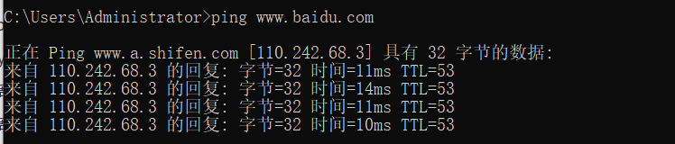
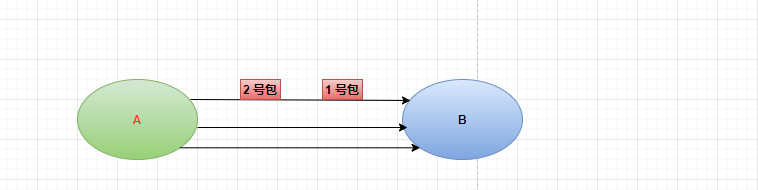
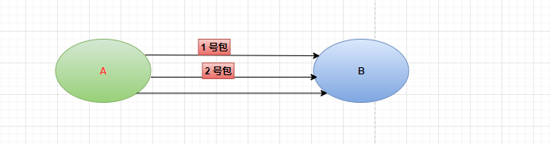
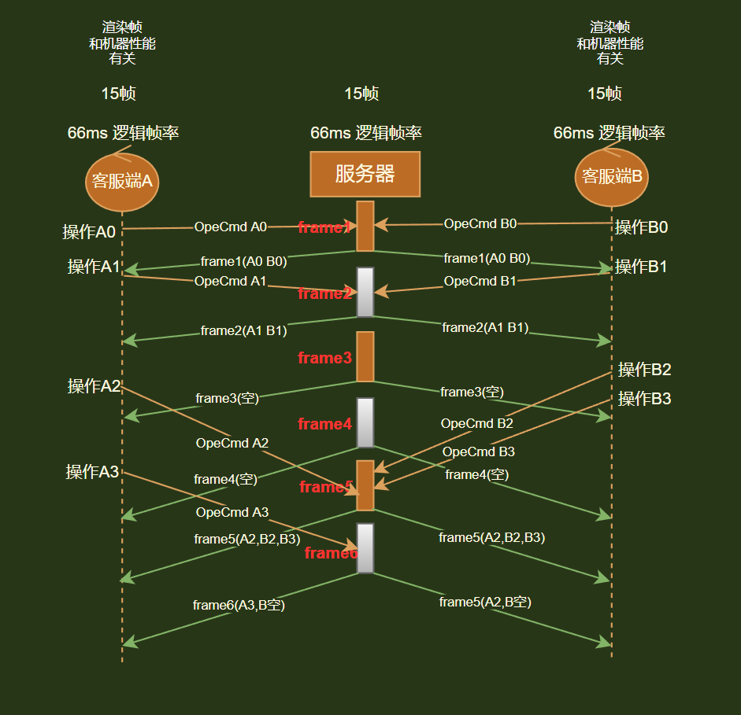

为啥选择帧同步
和写单机游戏类似，客服端收集自己的指令操作发送到服务器，服务器进行收集广播给所有的玩家，客服端本地通过收到的包来推进游戏进度
服务器：每隔一段时间收集客服端的操作，发给客服端，然后继续采集下一次的操作，在发给客服端
客服端：收到服务器的广播下来的操作—->计算逻辑—>采集自己操作上报服务器
帧同步适用于实时性要求高，人数较少的情况
帧同步服务器每隔多久同步一次比较合适呢
上限： 网络传输时间，比如我们的ping百度网站你得到的时间是10ms 那么 1000/10 100 帧

下限：下发给玩家的速度，也就是玩家的体验，科学数据玩家在50 ms-100ms 之间人不会感觉到卡顿认为比较流畅
那么就是[1000/50,1000/100]—>[20,10] 所以王者荣耀一般取中间值15fps 也就是1秒15帧 一帧 1000/15 66ms
算下带宽是多少，承受的了吗
假设5000个人，按一个房间10人，那么就得500个房间
假设1秒的数据， 一帧我们每人**16**个字节的指令数据，那么16 * 10 * 15 * 500 —>1,200,000Byte –> 1172KB —> 1MB 带宽，对于现在的服务器完全是可以承受的
选用udp还是tcp
tcp ：准确 丢包重传
通常tcp也能做到做帧同步，但是很难因对网络波动，因为假如tcp有条链路发送了一个1号包过去，这个时候因为网络波动这个链路网速下降，这个时候可能会触发重传，在发送2号包过来的时候，就可能会卡主2号包，从而导致客服端收不到包数据

udp：高效，可能丢包，乱序 假设1号包卡主了，那么udp不会去等待1号包是否发完，在下一次需要发送的时候就会再次通过新的链接发送2号包过去

帧同步运行前提
-
输入一致性
- 确定性的碰撞，寻路结果
- 玩家操作顺序唯一
-
计算要一致性
-
服务器针对每个单局游戏开局时间生成随机数种子，逻辑帧计算均为伪随机
-
浮点数采用多个定点数保存和运算，确保浮点数计算结果一致
-
每个网络包都包含自增序号，具体算法可根据项目自行定义
-
严格控制静态变量（全局变量）的使用
-
禁止使用不稳定的排序算法
-
禁止使用顺序不确定的数据结构
-
尽量不使用非开源的第三方库（无法确定第三方库中是否有上述的结果不一致算法）
-
多线程问题
主要是每个客服端多线程算出结果可能会不一致，比如A客服端用了3个线程来算你 这个数据，b客服端用1个线程来算你这个数据导致最后A和B的结果不一致，除非你 能保证最后结果一致，要不最好别用
-
协程 (Coroutine)内写逻辑带来的不确定性也要注意
-
-
开始演示代码前，要保证运行的多个客服端代码版本要一致，如果因为版本不一致导致运行结果不一样，然后查了很久bug那就太2了，如果当前线上存在多个版本，则只有同版本玩家可匹配到单局游戏中
-
c#的
dictionary遍历的时候是无序的，这个要注意,很容翻车 -
如果同批发送的包比较多，尽量合并，减少包头信息的冗余
-
业务层上面尽量减少数据结构包的大小
-
逻辑帧的规则
收到第
N帧，只有当我收到第N+1帧的时候，第N这一帧我才可以执行。 服务器会按照一定的频率，不同的给大家同步帧编号，包括这一帧的输入带给客户端，如果带一帧给你的数据你拿到之后就执行，下一帧数据没来就不能执行，它的结果就是卡顿。
战斗流畅保证方法
-
逻辑帧保证在
15-18帧上下数据包冗余发送，发送数据量较少的当前帧时，可以把前几帧数据合并发送
-
渲染帧保证在
30帧以上常见的客户端预测，客户端插值，服务器延迟补偿方法保证客户端画面流畅
帧同步流程

服务器:
-
服务器的每个比赛对象，都有一个成员frameid 保持了当前的比赛，下一帧要进入的id，frameid =1
-
我们在服务器上定义了一个数据结构 match_frames 用来保存我们所有玩家每帧的操作
保存match_frames这个结构的作用:
- 录像回放
- 断线重连
- 在不同步的情况下，看看有没有作弊
- udp丢包时序问题，丢包的时候需要补发给客服端
-
next_frame_opt 每帧服务器采集到的客服端操作
next_frame_opt = {frameid ,{1号操作玩家指令,2号操作玩家指令,3号操作玩家指令,4号操作玩家指令, ..}}
-
服务器启动定时器 每隔66ms触发一次 on_logic_frame
-
保存我们当前的操作到match_frames
-
遍历每个玩家，给每个玩家发送我们的帧操作
-
服务器进入下一帧 frameid = frameid + 1
-
服务器进入采集下一帧的操作，清空上一帧采集到的客服端操作:也就是把next_frame_opt清空
next_frame_opt = {frameid ,{}}
-
发送服务器认为这个玩家还没有同步的帧，每个玩家对象记录了一个变量 sync_frameid 用来记录这个客服端已经同步了多少帧
同步的帧： sync_frameid + 1 TO 最新的帧 —>主要是用来解决udp丢包和时序问题
-
采用udp 将我们需要补发的帧同步给客服端[sync_frameid + 1,最新帧]
客户端:
-
通过网络受到网络受到帧同步的数据包以后,
-
每个客服端也会有一个sync_frameid,用来记录一下你这个客服端真正已经同步到那个帧了
-
如果收到的帧id小于客服端的帧id，那么直接丢弃这个帧
-
为什么会出现需要丢弃这个帧的情况
因为udp 时序问题 ：有先发后到，后发先到的可能
-
为什么我们没有收到99帧，可以开始处理100帧，还能同步吗
99帧没有处理，服务器发100帧的时候回补发99帧
-
-
如果上一帧的操作不为空，那么这个时候，我们在处理下一帧之前，一定要先同步下上一帧的结果
客服端A:|….|..66.3.|….|
客服端B:|….|..66.2.|….|
在播放动画的帧与帧之间，我们会出现时间的差异，会导致位置不同步，
logic_pos 66ms –>统一用66ms来计算新的位置和结果
客服端A:|….|..66.|….|
客服端B:|….|..66.|….|
每帧都同步，处理下一帧之前，每帧都要同步，同样的输入—>同样的输出
-
跳帧 快速的同步完过时的帧，直到最新的帧
-
控制我们的客服端，来根据操作，来播放动画，更新我们的逻辑推进，创建怪物，防御塔，等等逻辑
-
采集你自己的操作，上报给客服端
服务器:
-
收到玩家的操作，更新服务器上认为玩家已经处理的帧id
98处理完–>99, 服务器发99帧->客服端—> 处理完99帧，客服端收集100帧操作，服务器收到100帧操作 100 - 1已经同步完了，这个时候就吧98变成99帧也就是 变成98–>99
-
如果收到玩家操作的帧id，next_frame_opts.frameid 等于马上要触发的帧id，说明收到了玩家过时的操作
假设服务器已经处理完99帧，马上要下发100帧了，这个时候客服端还上传99帧，那么可以认为玩家因为网络或者特殊原因发送了过时的操作，所以直接丢弃
-
这样丢弃会影响玩家的手感吗
丢帧肯定会影响玩家的手感，但是基本不影响玩家操作，15fps，按一个按钮基本4次，中间丢一帧，不太会影响玩家整体，基本玩家感受不出来。
-
-
保存玩家的操作，等待下一帧的触发，goto到逻辑4
如何克服udp的时序和丢包问题
客服端: 丢包, 晚到，服务器会补发丢掉的帧
服务器: 丢包, 没有太多的影响， 下一帧马上就可以处理
防外挂
-
视野外挂
- 划分地图区域
- 玩家信息分层
-
属性外挂 多客户端状态校验，客户端执行完每个逻辑帧后，根据游戏的状态计算出一个
Hash值，用其标定一个具体的游戏状态。不同客户端通过对比这个值，即可判断客户端之间是否保持同步 -
数据的加密处理
-
输入的合理性检测
-
服务器运行一个精简的可信赖的客户端环境，得到可信赖的数据
-
反外挂是一个很大的议题。帧同步结构中，所有数据都在玩家本地，理论上玩家可以任意修改这些数据。这里不讨论传统的加壳及反调试技术。这里讨论在实际开发中，帧同步框架能够通过什么方法来解决该问题。框架能提供至少3种保护: a. 关键数据保护，b. 虚拟化, c. 服务器后验证。关键数据保护可以有很多技术，框架对核心数据，可以做内存加密，内存多拷贝冗余保护等。框架提供虚拟化技术，也是一个不错的选择，部分代码可以在虚拟机(lua)中直接执行，破解难度会增加(前提是资源保护足够)。服务器后验证是杀手锏，验证服务器能运行游戏录像，并直接得出游戏战斗结果，任何作弊都无所遁形。
因此对于帧同步，反外挂相对是一件比较容易的事情。游戏过程中，玩家作弊只会影响到自己，不会影响到他人。游戏结算时，当服务器检测到玩家之间游戏结果不一致时，通过验证服务器，对游戏录像进行验证计算，很容易就能发现是哪个玩家发生了作弊。
怎么优化卡顿的问题
-
buffer缓存 -
本地插值平滑加逻辑与表现分离
-
使用
UDP（在手机环境下，弱网的情况下，TCP很难恢复重连） -
服务端
Sleep(1)，并不是代表休息1ms，具体精度看操作系统。（windows约15ms，linux约1ms）要在
windows上测试需要将全局设置高精度计时器timeBeginPeriod(1)，有些别的软件开启时会设置全局的精度。当调用Sleep（1）时，CPU会进入睡眠状态，以节省电量，因此，如果CPU处于睡眠状态，操作系统（OS）如何唤醒你的线程？答案是硬件中断。操作系统对计时器芯片进行编程，然后该计时器芯片触发中断以唤醒CPU，然后操作系统可以调度线程
计时器中断之间的间隔取决于Windows版本和你的硬件，但在我最近使用的每台计算机上，默认间隔为15.625毫秒（1,000毫秒除以64）。这意味着，如果你在某个随机时间调用Sleep（1），那么将来每当下一个中断触发时（或者如果下一个中断过早，则在此之后触发），你可能会在1.0毫秒至16.625毫秒之间的某个时间被唤醒。